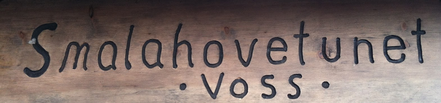

Smalahovetunet
At Voss vert assosiert med smalahove, skuldast i stor grad denne familiebedrifta på Løne. Vertskapet er ein attraksjon i seg sjølve, og omgjevnadane er upåklagelege.
Smalahovetunet ligg ca to kilometer frå brura sin barndomsheim og er lett å finne fram til. Det er parkeringsplass til alle, og Ivar, smalahovekongen sjølv, skryt av at han har gratis parkering i to døgn!
Les meir om Smalahovetunet på heimesida deira og i denne artikkelen frå Dagbladet.
